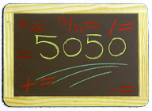

El principal operador de esta categoría es el operador asignación "=" que permite al programa darle un valor a una variable, que ya hemos utilizado en varias ocasiones en esta unidad. Además de este operador, Java proporciona otros operadores de asignación combinados con los operadores aritméticos, que permiten abreviar o reducir ciertas expresiones.
Por ejemplo, el operador "+=" suma el valor de la expresión a la derecha del operador con el valor de la variable que hay a la izquierda del operador, y almacena el resultado en dicha variable. En la siguiente tabla se muestran todos los operadores de asignación compuestos que podemos utilizar en Java.
| Operador | Ejemplo en Java | Expresión equivalente |
|---|---|---|
+= |
op1 += op2 |
op1 = op1 + op2 |
-= |
op1 -= op2 |
op1 = op1 - op2 |
*= |
op1 *= op2 |
op1 = op1 * op2 |
/= |
op1 /= op2 |
op1 = op1 / op2 |
%= |
op1 %= op2 |
op1 = op1 % op2 |